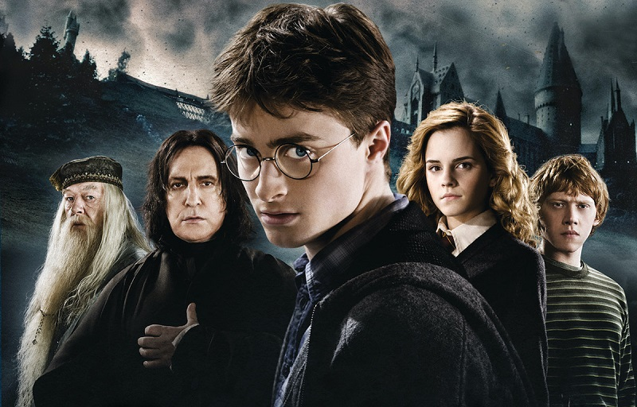

Гарри Поттер - Фрагмент последнего романа
Чувство напряжённого ожидания наполнило тёплый воздух шатра,
гул голосов кое-где нарушался взрывами хохота.
Мистер и миссис Уизли ходили по проходам,
улыбались и приветствовали родственников. Миссис Уизли была в мантии нежно-аметистового цвета.
Секундой позже Бил и Чарли встали перед шатром,
оба в праздничных робах.
Фред свистнул по-волчьи, что вызвало всплеск хохота по залу,
но затем в шатре наступила тишина,
и только тихая музыка исходила из того, что выглядело как золотые надувные шары.